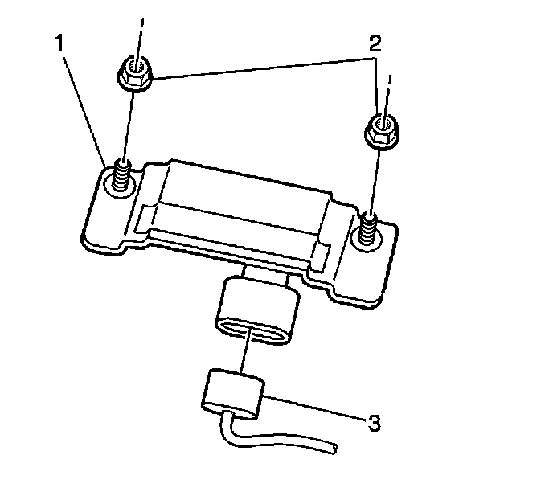
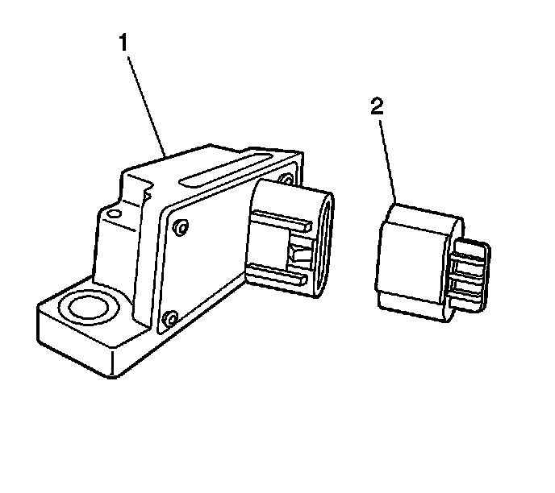

Yaw Sensor with Vehicle Lateral and Longitudinal Accelerometer Replacement
Vehicle Yaw Sensor with Vehicle Lateral and Longitudinal Accelerometer Replacement
Removal Procedure
1. Turn OFF the ignition.
2. To access the yaw rate sensor/lateral and longitudinal accelerometer move the passenger seat rearward.
3. Carefully lift the carpet by the seam.

4. Remove the 2 mounting nuts (2) that secure the accelerometer.

5. Disconnect the electrical connector (2) from the accelerometer.
6. Remove the accelerometer (1).
Installation Procedure
1. Install the yaw rate sensor/lateral and longitudinal accelerometer (1) .
Notice: Refer to Fastener Notice (Fastener Notice) .
2. Install the 2 nuts (2) that secure the accelerometer.
Tighten the mounting nuts to 9 N.m (80 lb in).
3. Connect the electrical connector (2) to the accelerometer (1).
4. Perform the ABS diagnostic system check. Refer to Diagnostic System Check - Vehicle (Initial Inspection and Diagnostic Overview) .